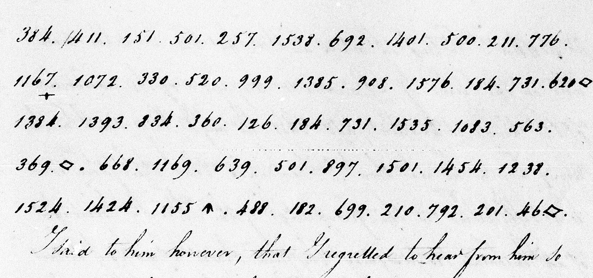

Quarto dossier · Corrispondenza diplomatica americana
Madrid, 1825: ciò che Everett non scriveva in chiaro
Nel settembre 1825 il nuovo ministro degli Stati Uniti a Madrid riferisce sul suo primo lungo colloquio con il capo del governo di Ferdinando VII: la Spagna, dice Zea, non riconoscerà mai l’indipendenza delle sue antiche colonie. In chiaro, Everett riferisce questo rifiuto. In cifra, dice di non crederci. Questi passi, tagliati o lasciati in numeri dagli editori del 1826 e del 1925, vengono letti qui per la prima volta, a quanto ci risulta.
«Ero pressoché convinto, dal [tono] delle sue parole, che esse non [esprimessero] i suoi veri sentimenti e fossero soltanto un linguaggio che circostanze particolari gli imponevano per il momento.»
Everett a Clay, Madrid, 25 settembre 1825 (passo cifrato, tradotto dall’inglese; tra parentesi quadre, due gruppi non risolti letti in base al senso).
1825: l’America spagnola è perduta, Madrid rifiuta di ammetterlo
Nel dicembre 1824 la battaglia di Ayacucho ha posto fine al dominio spagnolo sul continente americano. Gli Stati Uniti hanno riconosciuto le nuove repubbliche già nel 1822; Washington vuole ora che la Spagna faccia altrettanto e cessi una guerra perduta, che minaccia anche Cuba. Ferdinando VII, restaurato come monarca assoluto nel 1823 con l’appoggio della Santa Alleanza, rifiuta. Il suo primo segretario di Stato, Francisco Cea Bermúdez, già diplomatico in Russia, passa per un moderato, stretto tra i liberali esuli e il partito «apostolico», più assolutista del re.
Alexander Hill Everett arriva a Madrid nell’estate del 1825 come ministro plenipotenziario. I suoi dispacci a Henry Clay, segretario di Stato di John Quincy Adams, usano un codice a nomenclatore di circa 1 600 numeri, lo stesso che Adams aveva impiegato durante la sua missione in Russia.
Il dispaccio del 25 settembre
Everett allega al suo dispaccio n. 7 delle «Note di una conversazione con il signor Zea». Il testo in chiaro riferisce la posizione ufficiale: il re non rinuncerà mai ai suoi diritti sulle colonie. Poi Everett passa al codice per dare il proprio giudizio. Nel 1826 il Dipartimento di Stato stampa il dispaccio per il Congresso, ma di questo passo conserva solo la prima proposizione. Nel 1925 William R. Manning, nella sua grande edizione della corrispondenza sull’indipendenza latinoamericana, stampa le sei righe così come sono, in numeri, «senza decodifica». Non pubblica nulla delle altre otto pagine cifrate dello stesso documento.

Che cosa dicono i passi cifrati
- Il rifiuto è una facciata. Zea ha detto «molte cose» a cui egli stesso non può credere; Everett le considera dissimulazioni, come ne praticano tutti gli uomini pubblici.
- La Russia dietro il gabinetto. Zea sarebbe entrato al governo grazie all’influenza di Ugarte, «egli stesso una creatura della Russia». Zea ha rotto con il suo protettore e lo ha allontanato inviandolo in missione a Torino; lo si ritiene tuttavia anch’egli schierato con la politica russa.
- Un ritratto senza veli. Bella presenza, calvo, robusto, «denti buoni, cosa rara tra gli Spagnoli, che per lo più, a cominciare dal re, si rovinano i denti fumando all’eccesso»; occhi che fa roteare mentre parla; un liberale per gusto, ostile al clero, che lavora «due o tre notti alla settimana».
- Perché dissimula. I ministri stranieri a Madrid condividono l’opinione di Everett: Zea è personalmente favorevole al riconoscimento, ma una «potenza forte» agisce in senso contrario. Non osa rischiare il posto: dichiararsi per il riconoscimento fornirebbe ai suoi rivali i mezzi per rovesciarlo. Il passo si interrompe sull’influenza dell’imperatore Alessandro.
- Una previsione. Se il forte partito rivale lo rovescerà presto, scrive Everett, «non se ne sentirà più parlare».
Che cosa insegnano queste lettere
La posizione ufficiale della Spagna nel 1825 è ben nota. Ciò che la cifra aggiunge è la lettura che ne dava il rappresentante degli Stati Uniti, e che egli giudicava troppo delicata per scriverla in chiaro: il rifiuto di Madrid non sarebbe una convinzione, ma il prezzo della sopravvivenza politica di un ministro, di fronte al partito apostolico e all’influenza russa. È anche ciò che il Dipartimento di Stato scelse di non stampare nel 1826.
La previsione si avverò molto presto. Zea fu congedato un mese dopo, alla fine dell’ottobre 1825. La Spagna riconoscerà il Messico solo nel 1836, dopo la morte di Ferdinando VII, e la maggior parte delle altre repubbliche ancora più tardi.
Il codice
È un codice a nomenclatore: circa 1 600 numeri per parole intere e sillabe, ordinati in blocchi alfabetici mescolati («the» = 1385). Everett vi aggiunge segni propri: un rombo per il plurale, una «v» per togliere la fine di una parola, un «+» per una variante, un «^» per la desinenza del participio. Abbiamo applicato senza modificarla la tavola ricostruita da Daniel Bourdeau sulla corrispondenza di Adams, dopo averla convalidata su un altro dispaccio di Everett di cui è stampata la decifrazione d’epoca (quasi il 95% di concordanza). Dei 1 201 gruppi del documento, il 98% si legge; 18 restano senza valore.
Ciò che resta incerto
- Una parte dei valori aggiunti alla tavola si basa sul senso o sulla posizione alfabetica del numero; sono segnalati uno per uno nella scheda.
- Per le otto pagine non esiste una decifrazione d’epoca completa. Alcune glosse a matita alle pp. 4–5 concordano con la nostra lettura.
- Non abbiamo ancora verificato il riassunto del dispaccio nei Papers of Henry Clay.
Riferimenti
National Archives and Records Administration, RG 59, Despatches from U.S. Ministers to Spain, vol. 25 (microfilm M31, bobina 27), immagini 0112–0121.
William R. Manning (a cura di), Diplomatic Correspondence of the United States concerning the Independence of the Latin-American Nations, t. III, New York, 1925, doc. 1134.
Daniel Bourdeau, tavola del codice di Adams ricostruita (repository cyphersolver, targets/jqa); segnalazione: il suo catalogo, n. 638.
Scheda «Everett a Clay» della pagina Documenti, con il dettaglio dei gruppi, il metodo e i crediti.